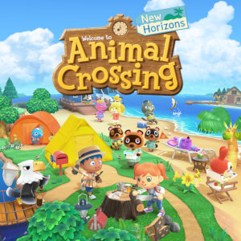

Things To Do In Quarantine
Quarantine can be boring afterwhile, hopefully this can help you find something new to do.
1. Naps
Even though you don't have to go to bed early, don't forget to rest up! Sticking to a consistent sleep schedule is good for your health.
2. Take Up a New Hobby
With more time available, it's the perfect time to try and take up another hobby! For example:
- Cooking
- Baking
- Drawing
- Painting
Check out sites such as these for inspiration and finding more hobbies!
3. Play Video Games
Although not seen as the most productive pastime, video games are fun to play. Just don't forget to do your work and take breaks. Some recommendations are:
- 1. Persona 5
- Persona 5 is a strategy RPG, part of the Persona series, released in 2016, but has also released a game afterward called Persona 5 Royal
- 2. Apex Legends
- If you like first-person shooting games, you may already know about Apex Legends. If not, that is alright too. It is a shooting game where you choose a character, each with their own abilities, and join a team to become the champions!
- 3. Animal Crossing: New Horizons
- One of the most popular games played since quarantine started is Animal Crossing: New Horizons, a relaxing a fun game where you play a villager moving to a new island that you develop and live one. You can also visit your friends on their island!

4. Binge Netflix or Hulu
Probably the main thing that people have done in quarantine is start binging Netflix or Hulu to catch up with their favorite shows or rewatch movies, if it's still there.
5. Read a Book
Sometimes, it is good to get away from technology and pick up a book to read. It can help you relax and grow your imagination.